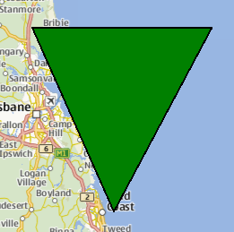

MapPolygon QML Type
The MapPolygon type displays a polygon on a Map. More...
| Import Statement: | import QtLocation 6.6 |
| Since: | QtLocation 5.5 |
- List of all members, including inherited members
- MapPolygon is part of QML Maps Plugin.
Properties
- autoFadeIn : bool
- border
- border.color : color
- border.width : int
- color : color
- path : list<coordinate>
- referenceSurface : enum
Methods
- void addCoordinate(coordinate)
- void removeCoordinate(coordinate)
Detailed Description
The MapPolygon type displays a polygon on a Map, specified in terms of an ordered list of coordinates. For best appearance and results, polygons should be simple (not self-intersecting).
The coordinates on the path cannot be directly changed after being added to the Polygon. Instead, copy the path into a var, modify the copy and reassign the copy back to the path.
var path = mapPolygon.path; path[0].latitude = 5; mapPolygon.path = path;
Coordinates can also be added and removed at any time using the addCoordinate and removeCoordinate methods.
For drawing rectangles with "straight" edges (same latitude across one edge, same latitude across the other), the MapRectangle type provides a simpler, two-point API.
By default, the polygon is displayed as a 1 pixel black border with no fill. To change its appearance, use the color, border.color and border.width properties.
Note: Since MapPolygons are geographic items, dragging a MapPolygon (through the use of MouseArea or PointHandler) causes its vertices to be recalculated in the geographic coordinate space. The edges retain the same geographic lengths (latitude and longitude differences between the vertices), but they remain straight. Apparent stretching of the item occurs when dragged to a different latitude.
Example Usage
The following snippet shows a MapPolygon being used to display a triangle, with three vertices near Brisbane, Australia. The triangle is filled in green, with a 1 pixel black border.
Map { MapPolygon { color: 'green' path: [ { latitude: -27, longitude: 153.0 }, { latitude: -27, longitude: 154.1 }, { latitude: -28, longitude: 153.5 } ] } }

Property Documentation
autoFadeIn : bool |
This property holds whether the item automatically fades in when zooming into the map starting from very low zoom levels. By default this is true. Setting this property to false causes the map item to always have the opacity specified with the QtQuick::Item::opacity property, which is 1.0 by default.
This property is part of the border property group. The border property group holds the width and color used to draw the border of the polygon.
The width is in pixels and is independent of the zoom level of the map.
The default values correspond to a black border with a width of 1 pixel. For no line, use a width of 0 or a transparent color.
color : color |
This property holds the color used to fill the polygon.
The default value is transparent.
path : list<coordinate> |
This property holds the ordered list of coordinates which define the polygon. Having less than 3 different coordinates in the path results in undefined behavior.
See also addCoordinate and removeCoordinate.
[since 6.5] referenceSurface : enum |
This property determines the reference surface of the polygon. If it is set to QLocation::ReferenceSurface::Map the polygons vertices are connected with straight lines on the map. If it is set to QLocation::ReferenceSurface::Globe, the vertices are connected following the great circle path, describing the shortest connection of two points on a sphere. Default value is QLocation::ReferenceSurface::Map.
This property was introduced in Qt 6.5.
Method Documentation
void addCoordinate(coordinate) |
Adds the specified coordinate to the path.
See also removeCoordinate and path.
void removeCoordinate(coordinate) |
Removes coordinate from the path. If there are multiple instances of the same coordinate, the one added last is removed.
If coordinate is not in the path this method does nothing.
See also addCoordinate and path.